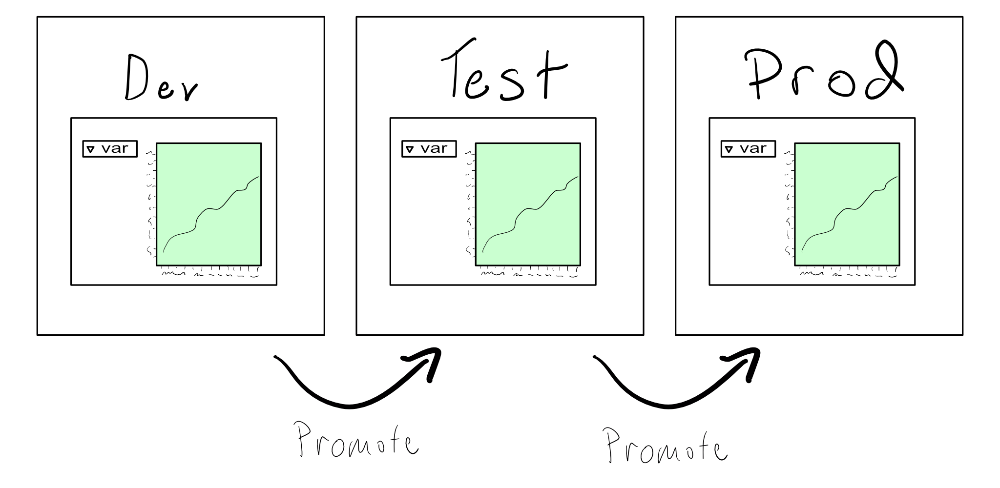
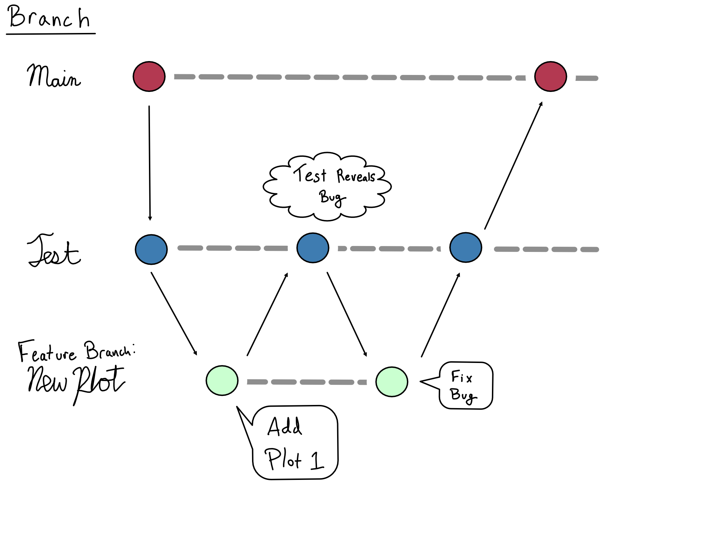

2 Code deployment and promotion
The most dangerous parts of a flight are when you’re closest to the ground. Things can go wrong at altitude, but there’s a lot more leeway with 35,000 feet of air below than 50.1
It’s the same with software. Properly tested software tends to continue running smoothly. It’s getting it up that gets you.
That’s why deployment is one of the primary concerns of DevOps best practices.
Deployment is the process of taking code that isn’t in production and putting it there – for both new code and upgrades. That moment when your Shiny app goes live or you run your report or job for real for the first time or when you add a new feature to your model – that’s the result of a deployment.
DevOps has a lot to say about deployments. In particular, DevOps suggests a framework called Continuous Integration and Continuous Deployment (CI/CD). The idea of CI/CD is to create a deployment process that is low friction so deployments can be incremental, frequent, and low drama.
A CI/CD process has three major components:
- Separate production and non-production environments.
- An explicit code deployment process.
- Automation that executes the deployment.
In this chapter, I hope to convince you that you need to create a code promotion workflow, help you understand how a data science promotion workflow is different from a general purpose software one, and illuminate tooling you can use to build your own promotion workflows.
2.1 You need a prod
One of the primary risks to production code is that a deployment could happen accidentally. To mitigate that risk, you need to separate the production environment and create a process to promote things into prod.

Here are some guidelines that, if followed, will result in a very stable prod environment:
Test looks a lot like prod. In fact, it’s best if it’s identical. You can be very confident that your code will work in prod if it works in a nearly identical test environment.
No manual changes in prod. If something breaks, you don’t get to make any changes until you can re-create the issue in a lower environment. Break this rule, and you’ll quickly find your environment drifting and attribute 1 goes out the window.
Changes and fixes get pushed via a promotion process, preferable automated. No making changes directly in prod that haven’t been thoroughly tested in a lower environment. This rule is very tempting to break.
Only certain people can promote code into prod. The approval process is well-defined and consistently followed.
Now, not every prod environment need follow all these guidelines. It’s up to you and your team to decide how to balance making it easy to make changes to prod and making sure prod is stable. There’s no right answer – only the right answer for your situation.
2.2 Dev and test environments
Creating a prod environment for data science looks very much like creating a prod environment for general purpose software development. The guidelines for data science prod would be right at home in a general purpose DevOps book.
Lower environments, on the other hand, often look very different because of the very different kind of software you’re building as a data scientist. If you’re working with IT/Admins to create your promotion process, this is likely to be one of the most important (and difficult) things to impress upon them.
Whether you’re talking data science or general purpose software development, dev is an environment for building, and test is for…testing. Your testing might include security, performance, functionality, or user acceptance testing (UAT).
That’s more-or-less where the similarity ends. The differences between general purpose software engineering and data science result in three big differences in dev and test environments and practices.
First, for general purpose software engineering, a lower environment needs to include inputs that are shaped like prod, but the actual content doesn’t matter. For example, if you’re building an online store, you need dev and test environments where the API calls from the sales system are in the same format as the real data – but you don’t actually care if it’s real data. In fact, you probably want to create some odd-looking cases for testing purposes.
That’s very different for a data scientist. In a dev or test environment, you don’t want write access to anything sensitive. But a dev environment for data science without read access to the real data is basically useless.
This is often a point of friction with IT/Admins who might believe access to fake data is fine. Convincing them that you need read-only access in a dev environment can often help allay these concerns.
Second, dev, test, and prod all look similar for general purpose software engineering, but there are often meaningful differences like mocked API calls or fake data. In constrast, data science dev and prod look quite different from each other, and test and prod can be extremely similar.
A data science dev environment is likely to be a code-writing environment like RStudio, Spyder, VSCode, or PyCharm on your laptop or on a server. In this environment, you’ll want a lot of freedom to install and try out new R and Python packages.
In contrast, test and prod should be environments with no direct editing capabilities. Instead, they should be environments for hosting with no direct ability to edit code.
For many data science purposes, test and prod can actually be the same environment. You need a separate instance of your project for testing, but many data science projects are read-only. For example, if you’ve got a dashboard that just allows views of the data, you can probably do your testing on a second instance of your dashboard in the prod environment.
Last, you’ve got an additional layer of testing a data science project. Because data science is about discovering and sharing insights from data, you’ll want some sort of monitoring for whether your dashboard values are accurate or for whether your model is experiencing drift over time. There are many different ways and frameworks to do this kind of testing, but you should be aware that it’s something you need to do as a data scientist that general purpose software developers don’t.
2.3 Environment Variables
In Chapter 1, we got deep into the different layers of the environment. There’s one important additional piece of an environment at runtime – the environment variables.
An environment variable is a value that is set in the environment. That means unlike a regular R or Python variable that is expected to change throughout the runtime, environment variables are set at the outset of your code to change the behavior throughout the runtime.
It is convention to make environment variable names in all caps with words separated by underscores. The values are always simple character values, though these can be cast to some other type inside R or Python.
Environment variables are extremely important for code promotion process because they provide a way to manage secrets across multiple environments, as well as a way to change behavior of your project in different environments.
Inside your code, you’ll use the name of the environment variable, so your app can use secrets and have different behavior without your code changing at all from environment to environment.
2.3.1 Secrets management
When you’re moving your code across environments, one of the most delicate parts is managing secrets like passwords and secret access keys.
Putting secrets directly in your code is a great way to end up with them leaking on GitHub or to people who aren’t supposed to have them. Do not put your secrets in your code. Instead, the best way to manage secrets is to reference them by name. Referencing secrets by name makes it safe to share your code freely and make secrets management a separate concern.
In Python, you can read environment variables from the os.environ dictionary or by using os.getenv("<VAR_NAME>"). In R, you can get and set environment variables with Sys.getenv("<VAR_NAME>").
Dev environment secrets are most often loaded from a plain text from a file on disk, though organizations are increasingly moving to secrets management tools so you get these secrets via an API of some sort.
If you are loading in secrets from a plain text file in Python, environment variables are usually set by explicitly reading a .env file into your Python session. The {python-dotenv} package is a good choice for doing this.
R automatically reads the .Renviron file as environment variables and also sources the .Rprofile file, where you can set environment variables with Sys.setenv(). I personally prefer putting everything in .Rprofile for simplicity – but that’s not a universal opinion.
Depending on the tooling you’re using, your Test and Prod environment may well come with integrated secrets management. The exact configuration will depend on that environment, but you should use those tools when they’re available.
2.3.2 Per environment behavior
If you’ve got a very simple project – perhaps a Shiny app that just reads a local CSV file – then the world will look exactly the same regardless of the environment.
But in many cases, you actually want your project to behave differently in dev, test, and prod. You might want to switch data sources from a dev database to a prod one, or you want to write to a real output location, or you want to use a different level of logging.
That means your project needs the ability to know which environment it’s in and then to respond accordingly. The easiest way to make this happen is to base that behavior on the value of an environment variable and to load in different environment variables depending on the environment.
Most of the time, the way this is accomplished is that you externally set the name of the environment and then your code loads up the appropriate set of environment variables.
There are a variety of ways to do this in Python – many of which involve creating a custom class for each of the environments you want to use and then selecting the right class based on the value of an environment variable.
In R, the {config} package is the standard way to load an environmental configuration. The config::get() function uses the value of the R_CONFIG_ACTIVE environment variable to choose which configuration to use. That means that switching from the dev to the prod version of the app is as easy as making sure you’ve got the correct environment variable set on your system.
2.4 Automated Promotion
It’s possible to manually promote code from one environment to another. Some organizations write runbooks that dictate how code is promoted. The issue is that humans aren’t great at following procedures. Environments often drift apart and your rigorous code promotion strategy comes undone.
Computers, on the other hand, are great at following procedures. The best way to automate CI/CD is to attach it to version control so that automated promotion follows from changes being approved in a version control system.
2.4.1 A Rough Intro to Git
These days, git is the industry standard for version control.
If you’re not already familiar, I’d suggest spending some time learning git.
People who say git is easy to learn are either lying or have forgotten. I am sorry our industry has standardized on a tool with such terrible ergonomics, but it’s really worth it to learn.
Whether you’re an R or Python user, I’d recommend starting with HappyGitWithR by Jenny Bryan. It’s a great on-ramp to learn git.
Even if you’re a Python user, the sections on getting started with git, on basic git concepts, and on workflows will be useful since they approach git from a data science perspective.
I’m not going to get into the mechanics of git in this book– what it means to add, commit, push, pull, merge, and more. There are lots of great resources out there that I’m not aiming to reproduce, though there is a git cheatsheet at the end of the chapter.
Instead, I want to talk about git strategies that match well with using git to execute a data science code promotion strategy.
For production data science assets, I generally recommend long-running test and prod branches, with feature branches for developing new things. New code is developed in a feature branch, merged into test for testing, and then promoted to prod when you’re confident it’s ready.
For example, if you had a new plots you were adding to an existing dashboard, your git commit graph might look like this:

In this git graph, you added your new plot. Testing then revealed a bug, which was fixed before merging back to prod.
CI/CD tooling allows you to add automation that runs on the basis of actions in git. Most commonly, CI/CD runs pre-merge checks like spell checking, code linting, and automated testing before making merges and runs automatic deployments after.
A CI/CD integration using the same git graph as above would have released 2 new test versions of the app and only 1 new prod version.
2.5 Comprehension Questions
- Write down a mental map of the relationship between the three environments for data science.
- What are the options for protecting production data in a dev or test environment?
- Why is git so important to a good code promotion strategy? Can you have a code promotion strategy without git?
- What is the relationship between git and CI/CD? What’s the benefit of using git and CI/CD together?
2.6 Lab 2: Host a website with automatic updates
In Lab 1, we created a Quarto website with some EDA and model building. In this lab, we’re going to actually deploy that website to a public site and render the EDA and modeling steps every time we push a new version up.
We’re going to do all this using GitHub and GitHub Actions. GitHub is the most popular git hosting service around. A few years ago, they released a CI/CD tool called GitHub Actions (GHA). It’s free for public repositories and is easy to use.
It’s safe to say GHA is eating the world of CI/CD.2
Before we get into the meat of the lab, there are a few things you have to do on your own. If you don’t know how to do these things, there are plenty of great tutorials online.
- Create an empty public git repo on GitHub.
- Configure your Quarto project directory to push to your GitHub repo.
Once you’ve got your GitHub repo up and connected, you want to set up your website to publish via GitHub Actions. There are great directions on how to get that configured on the Quarto website.
In those instructions, you’ll set up GitHub Pages to serve your website off a long-running standalone branch called gh-pages. Along the way, you’ll generate an _publish.yml, which is a Quarto-specific file for configuring publishing locations.
You’ll also generate the GitHub Action workflow file, which will live at .github/workflows/publish.yml. Since the main point here is to learn about CI/CD like GitHub Actions, let’s take a minute to make sure you understand what the GitHub Action does.
.github/workflows/publish.yml
on:
workflow_dispatch:
push:
branches: main
name: Quarto Publish
jobs:
build-deploy:
runs-on: ubuntu-latest
permissions:
contents: write
steps:
- name: Check out repository
uses: actions/checkout@v2
- name: Set up Quarto
uses: quarto-dev/quarto-actions/setup@v2
- name: Render and Publish
uses: quarto-dev/quarto-actions/publish@v2
with:
target: gh-pages
env:
GITHUB_TOKEN: ${{ secrets.GITHUB_TOKEN }}This action has three high-level sections – on, name, and jobs.
This particular syntax is unique to GitHub Actions. The basic idea is universal to all CI/CD systems – you define a trigger and a job to do when it’s triggered.
The on section defines when the workflow occurs. In this case, we’ve configured the workflow only to trigger on a push to the main branch, which includes a merge.
The jobs section defines what happens when the job is triggered. The most common way to define what happens is to use preexisting GitHub Actions steps with uses.
As you can see from the runs-on field, we’re starting with a very basic Ubuntu setup. After that, the first two workflow steps set up our environment, with our website’s GitHub repository checked out into the Actions environment and Quarto installed.
In the third step, we’re actually rendering the website and then pushing it back to the repository. This third step makes use of arguments in GitHub Actions. In GitHub Actions, with defines variables used by the workflow, and env defines values in the environment – often secrets used by the workflow, like in this case.
Now, if you try to run this, it probably won’t work.
That’s because the CI/CD process occurs in a completely isolated environment, so we need to set up the versions of R and Python, as well as the packages to run our EDA and modeling scripts.
First, add the commands to install R, {renv}, and the packages for your content to the GitHub Actions workflow.
.github/workflows/publish.yml
One important thing to note is the repos override. This is because I’d like {renv} to install packages from binaries rather than compiling them because it’s much faster. But my CI/CD environment is using Ubuntu, not whatever I’m using on my desktop. So I’ve got to let {renv} in GitHub Actions know to use public Posit Package Manager for my current operating system.
Then you add a workflow to GitHub Actions to install Python and the necessary Python packages from the requirements.txt.
.github/workflows/publish.yml
Note that in this case, we run the Python environment restore commands with run rather than uses. Where uses takes an existing GitHub Action and runs it, run just runs the code included there in the terminal.
Once you’ve done that, your website should be good to go. If you want to check, make a change to your website and push to the main branch. If you click on the Actions tab on GitHub you’ll be able to see the Action running. Once it finishes, you should be able to see your change reflected on your website.
Once it’s up, your website will be available at https://<username>.github.io/<repo-name>.
Don’t worry if you don’t like that URL. We’ll set up a custom domain in Chapter 13.
2.7 Cheatsheet: Git
| Command | What it Does |
|---|---|
git clone <remote> |
Clone a remote repo – make sure you’re using SSH URL. |
git add <files/dir> |
Add files/dir to staging area. |
git commit -m <message> |
Commit your staging area. |
git push origin <branch> |
Push to a remote. |
git pull origin <branch> |
Pull from a remote. |
git checkout <branch name> |
Checkout a branch. |
git checkout -b <branch name> |
Create and checkout a branch. |
git branch -d <branch name> |
Delete a branch. |
2.7.1 Freezing Quarto Computations
If you read the Quarto documents, they recommend freezing your computations. This is very useful if you want to render your R or Python code locally and only render the markdown elsewhere.
Because the main point here is to learn about getting environments as code working in CI/CD you should not freeze your environment.
2.7.2
It’s worth noting that commercial air travel is exceptionally safe – including takeoff and landing. But we’re talking relative risk here.↩︎
Prior to the release of GHA, Travis and Jenkins were the industry standards for CI/CD. GitLab, another git host, has long offered a very good CI/CD integration.
Lots of organizations have Azure DevOps, formerly known as Visual Studio Team Services. Microsoft, who owns Azure, acquired GitHub in 2018, so who knows what the future holds.↩︎